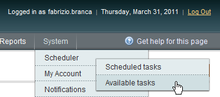
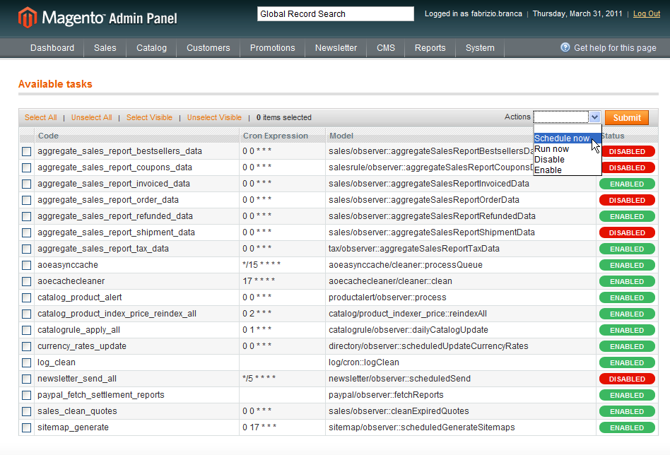
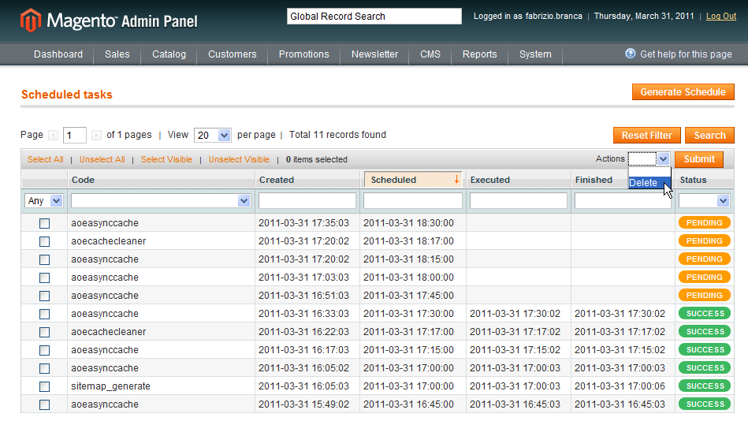
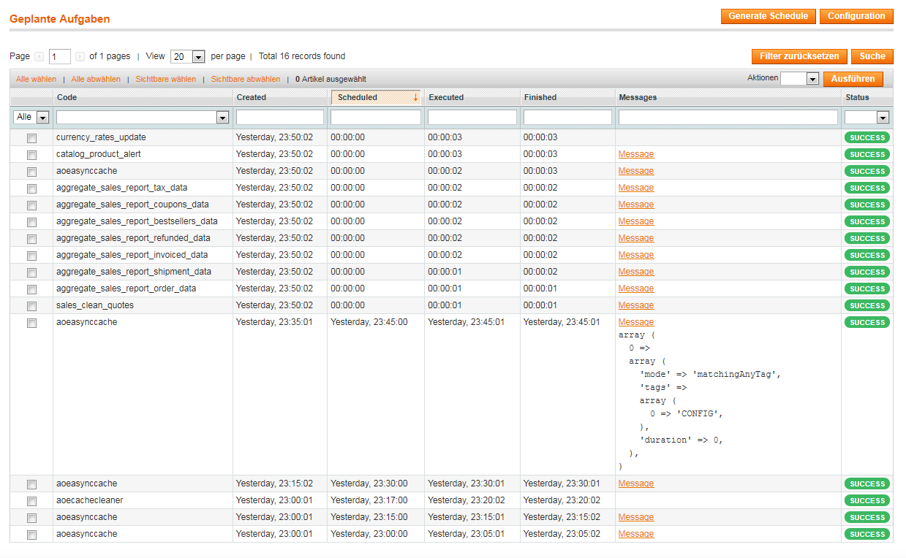
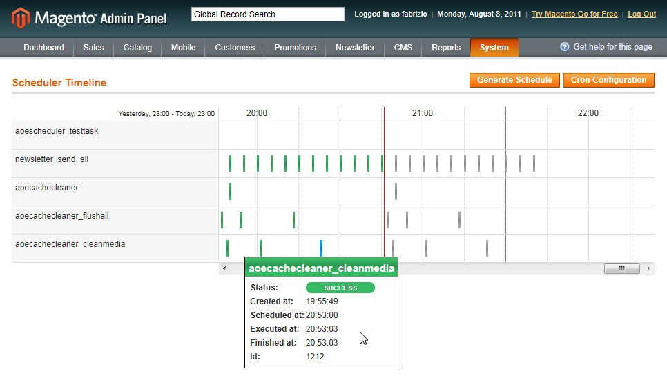
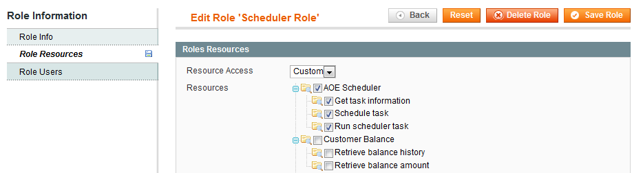
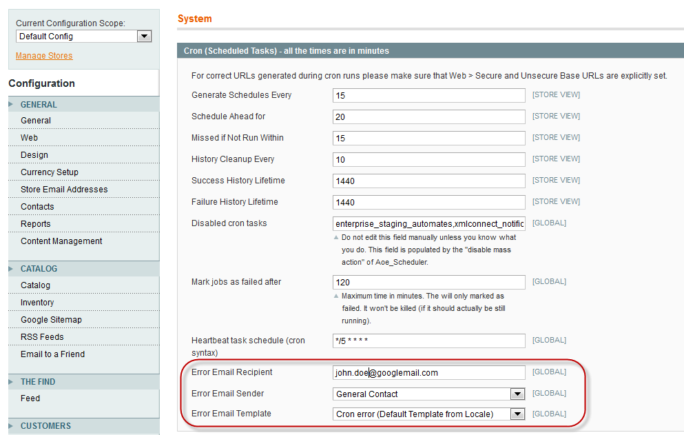
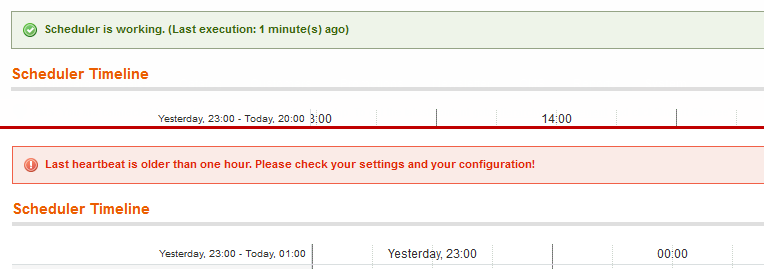

Magento Cron Scheduler
Content
- AOE Scheduler
- Command line interface
- Download
- [Update] Version 0.0.2 (Added return messages)
- [Update] Version 0.0.3
- [Update] Version 0.0.4
- [Update] Version 0.1.0 (Added timeline view)
- [Update] Version 0.1.2
- [Update] Version 0.2.0 (Added Web Service API support)
- [Update] Version 0.2.1
- [Update] Version 0.2.2 (Heartbeat and ACL bugfix)
- [Update] Version 0.3.2
AOE Scheduler
Even though I'm currently having a great time at the TYPO3 Snowboard Tour in Zell am See I did some Magento hacking these days I want to share with you:
Using cron jobs in Magento is a very useful way to perform recurring tasks in the background. You can easily add tasks to your module by adding a couple of lines to your module's config.xml configuring what should be executed (model) in what intervals (cron_expr). Magento itself brings some tasks e.g. for processing reports or updating the currency rates. Here is an example of Aoe_Asynccache's configuration that will clear the cache in the background:
<config>
<crontab>
<jobs>
<aoeasynccache>
<schedule><cron_expr>*/15 * * * *</cron_expr></schedule>
<run><model>aoeasynccache/cleaner::processQueue</model></run>
</aoeasynccache>
</jobs>
</crontab>
</config>Problem
But there are some problems with those cron tasks: It's hard to see which tasks had been executed and which tasks will be executed next. Currently the only way is to have a look at the cron_schedule database table.
Developing cron tasks is not easy because it means waiting for the next scheduler run to execute your task. Debugging also is not easy as the scheduler runs those tasks in the background and won't give you any valuable feedback. Keeping an eye on the php error logs and writing own logs to see what is happening within your task is quite annoying.
Solution
My latest Magento extension "Scheduler" is the solution to these problems. It comes with two backend controllers showing grids of all available tasks and the scheduled ones, and a command line interface to help you handle the tasks, while adding some more handy features:

Available tasks

This view shows all available tasks. It scans the xml configuration from Magento's and your additional modules and generates a list of all tasks, while also considering those tasks, whose intervals can be configured dynamically within the Magento backend (e.g. sitemap generation).
Via the mass actions you can schedule a task to be executed as soon as possible. That means it will be executed on the next scheduler run, that is - depending on your server configuration - a couple of minutes after scheduling it.
You can also choose to run the task directly. Be careful with that, as the execution might last longer than a few seconds or might depend on some other command line environment settings. For testing small tasks this might still be a comfortable option.
A completely new feature is, that you can disable or enable a task. Magento does not offer this feature and will always execute all tasks as long as they have a valid model and cron expression. But some tasks may not be needed in your case (e.g. like newsletter_send_all) and can be turned off completely using this feature.
Scheduled tasks

In this view you can see the tasks that were executed in the past and you can see what tasks will be executed in the near future. You can filter the list be job-code and status and you're even able to delete tasks.
There's a button in the top that allows you to regenerate the schedule.
Command line interface
The command line interface can be found in the shell folder. When calling it without any additional parameters you'll get an overview of available actions and their parameters:
> cd shell
> php scheduler.php
Available actions:
-action listAllCodes
-action scheduleNow -code <code> Schedule a job to be executed as soon as possible
-action runNow -code <code> Run a job directlyWith the "listAllCodes" command you'll get an overview of all available tasks, their configured intervals and their status:
> php scheduler.php -action listAllCodes
aggregate_sales_report_bestsellers_data 0 0 * * * disabled
aggregate_sales_report_coupons_data 0 0 * * * disabled
aggregate_sales_report_invoiced_data 0 0 * * * enabled
aggregate_sales_report_order_data 0 0 * * * disabled
aggregate_sales_report_refunded_data 0 0 * * * enabled
aggregate_sales_report_shipment_data 0 0 * * * disabled
aggregate_sales_report_tax_data 0 0 * * * enabled
aoeasynccache */15 * * * * enabled
aoecachecleaner 17 * * * * enabled
catalog_product_alert 0 0 * * * enabled
catalog_product_index_price_reindex_all 0 2 * * * enabled
catalogrule_apply_all 0 1 * * * enabled
currency_rates_update 0 0 * * * enabled
log_clean enabled
newsletter_send_all */5 * * * * disabled
paypal_fetch_settlement_reports enabled
sales_clean_quotes 0 0 * * * enabled
sitemap_generate 0 17 * * * enabledAnd finally you can schedule or even directly execute tasks from here, which is great for development or debugging of tasks:
> php scheduler.php -action runNow -code sitemap_generateDownload
So, if you also miss those features in your Magento shop and want to see what's going on in the background, try my module that also includes clean model classes for schedules and task configurations:
Aoe_Scheduler (latest version from GitHub)
(As always the modman configuration file is included or simple extract the file into your Magento root directory).
[Update] Version 0.0.2 (Added return messages)

Release notes:
New feature:
- Added possibility to have cron jobs return messages by having the cron method returning a value (on failure and on success. E.g. "Cleared XX cache entries. Duration YY seconds")
Fixed bugs: - Cache will be cleared when disabling or enabling actions
- Fixed missing modules xml file
Info: - Tested with Magento Community Edition 1.4.x and 1.5.x
[Update] Version 0.0.3
Bugfix realease
[Update] Version 0.0.4
Changes:
- Jens Schneider reported a bug that occured when no configurable information was available. Thanks!
- The cron expression will now be displayed in the "available tasks" list even when it isn't explicitely given, but pointing to an configuration value
[Update] Version 0.1.0 (Added timeline view)
Checkout this blog post for details on the timeline feature

[Update] Version 0.1.2
Bugfix release. Download latest version from GitHub.
[Update] Version 0.2.0 (Added Web Service API support)
This new version adds support for the Magento Webservice API, allowing triggering or scheduling tasks from a remote computer. This may be useful in different scenarios. (I need this to trigger tasks during acceptance tests.)
As always: Download the latest of this module version from GitHub.
Methods:
Method name
Description
Arguments
Return value
aoe_scheduler.runNow
Runs scheduler task immediately
code
array with task info
aoe_scheduler.schedule
Schedules a task
code [, time]
array with task info
aoe_scheduler.info
Retrieves information about a task
taskId
array with task info
Short tutorial on how to use (this) web service
- Create a web service user role:
Go to System > Web Services -> Roles -> Role Resources
and set "Resource Access" to "all" or to "Custom" and select the specific options you want to grant to your web services user:

-
Create a web service user and assign him to the previously created role (System > Web Services > Users)
- Now you can access some scheduler functions (more might follow soon) via web service api. Currently only API v1 is implemented.
Here is some sample code
<?php
$client = new SoapClient('http://yourhost/api/?wsdl');
$session = $client->login('your_username', 'your_api_key');
// Run a scheduler task
$result = $client->call($session, 'aoe_scheduler.runNow', array('aoecachecleaner'));
var_dump($result);
/*
array(7) {
["job_code"]=>
string(15) "aoecachecleaner"
["status"]=>
string(7) "success"
["created_at"]=>
string(19) "2011-11-15 20:55:41"
["scheduled_at"]=>
string(19) "2011-11-15 20:55:41"
["executed_at"]=>
string(19) "2011-11-15 20:55:41"
["finished_at"]=>
string(19) "2011-11-15 20:55:41"
["schedule_id"]=>
string(6) "150006"
}
*/
// Schedule a task to run (from a normal scheduler process) as soon a possible ...
$result = $client->call($session, 'aoe_scheduler.schedule', array('aoecachecleaner'));
// ... or at a given time (e.g. in 1 hour):
// $result = $client->call($session, 'aoe_scheduler.schedule', array('aoecachecleaner', time()+60*60));
var_dump($result);
/*
array(5) {
["job_code"]=>
string(15) "aoecachecleaner"
["status"]=>
string(7) "pending"
["created_at"]=>
string(19) "2011-11-15 21:06:07"
["scheduled_at"]=>
string(19) "2011-11-15 21:06:07"
["schedule_id"]=>
string(6) "150007"
}
*/
// Get information on an existing task
$result = $client->call($session, 'aoe_scheduler.info', array('150007'));
var_dump($result);
/*
array(5) {
["job_code"]=>
string(15) "aoecachecleaner"
["status"]=>
string(7) "pending"
["created_at"]=>
string(19) "2011-11-15 21:06:07"
["scheduled_at"]=>
string(19) "2011-11-15 21:06:07"
["schedule_id"]=>
string(6) "150007"
}
*/[Update] Version 0.2.1
Release notes:
- A new configuration option "max_running_time" was introduced. It is set to 120 (minutes) by default. If a running job has not finished after this time it will be marked as failed. (The task itself will not be killed if it actually might be still running.
- Jobs that have broken configuration (or are disabled) will be detected and marked as failed.
- The length of the bar of a running job is correctly calculated now.
- Added table prefix in sql statement
- Minor code cleanup
Get the latest version of this module from GitHub or Magento Connect.
Btw, the Aoe_Scheduler module currently is on the landing page of Magento Connect.
[Update] Version 0.2.2 (Heartbeat and ACL bugfix)
Release notes:
Bugfixes
- The acl configuration was broken. Now that's fixed and can be selected in System > Permission > Roles > Role Resources and allows you to give non admin users fine-grained access to the three views coming with this module.
- Passing $this to the callback: See https://github.com/fbrnc/Aoe_Scheduler/issues/2
Heartbeat
Sometimes - for various reasons - Magento's scheduler might stop working. Often there are business critical tasks that need to be run on a regular basis, so there's a need in monitoring the if everything works fine behind the scenes. That's why I added a new dummy task "Heartbeat". By default it runs every 5 minutes. This can be configured or even deactivated completly. This tasks does nothing but showing that the scheduler is working correctly.
In addition to that there is a new shell command that allows you the check when a task was run successfully the last time (works for all scheduler tasks - not only for the heartbeat task):
> php scheduler.php -action lastRun -code aoescheduler_heartbeat
1327960203By adding the "-secondsFromNow" parameter you'll get the duration since the last execution:
> php scheduler.php -action lastRun -code aoescheduler_heartbeat -secondsFromNow
35So you can use this to integrate your instance to whatever monitoring you're using. Using the default configuration the last value must not be bigger than 5x60 = 300 seconds. If it is, there's something wrong with your scheduler.
In the future I might also add a controller to monitor this from outside, but currently this Magento shell script should do the trick.
Get the latest version of this module from GitHub or Magento Connect.
[Update] Version 0.3.2
The latest version of Aoe_Scheduler is available
- on GitHub
- and on Magento Connect
Features/Improvements:
- Composer support: Check http://packages.firegento.com/ and read this blog post to learn more about using Magento with Composer.
- Switched from local code pool to community code pool: If you installed Aoe_Scheduler by just copying the source code into your Magento you might want to remove app/code/local/Aoe/Scheduler first. Installing/updating the module using modman should work fine without any manual steps.
- Mail notification on errors: An email address and an email template can be configured. If a task returns an error or an exception is thrown this email address will receive an error message.
- New events: Following events allow you to do other stuff before and after a job is executed. For example you could use this to dynamically schedule a successor task as a dependency to another task.
- Mage::dispatchEvent('cron_'.$jobCode.'_before', array('schedule' => $schedule));
- Mage::dispatchEvent('cron_'.$jobCode.'_after_error', array('schedule' => $schedule));
- Mage::dispatchEvent('cron_'.$jobCode.'_after_success', array('schedule' => $schedule));
- Mage::dispatchEvent('cron_'.$jobCode.'_after', array('schedule' => $schedule));
- Mage::dispatchEvent('cron_'.$jobCode.'_exception', array('schedule' => $schedule, 'exception' => $e));
- 
- 


This website uses disqus for the commenting functionality. In order to protect your privacy comments are disabled by default.
Enable Comments